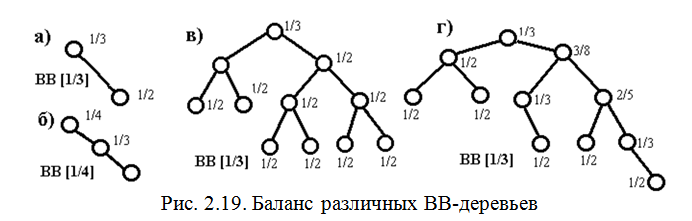
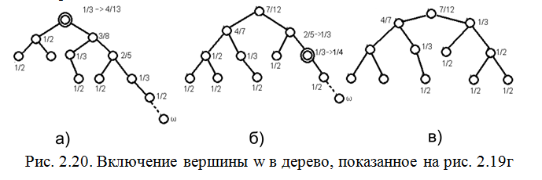
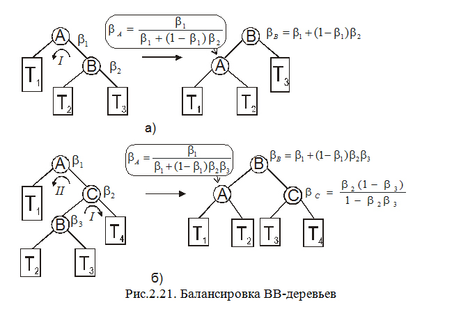
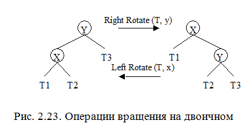
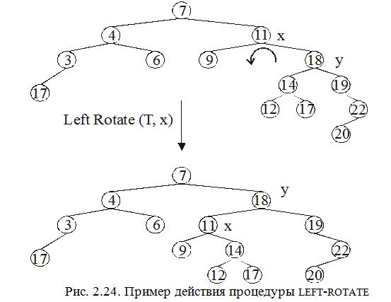

Сбалансированные по весу деревья есть класс бинарных деревьев, в которых ограничение на высоты поддеревьев заменено ограничением на число вершин в поддеревьях. Эти деревья называют деревьями с ограниченным балансом или ВВ-деревьями [12]. Они базируются на других принципах и не сравнимы со сбалансированными по высоте деревьями (АВЛ-деревья), но они обладают схожими свойствами. От АВЛ-деревьев они отличаются в основном тем, что содержат параметр, который может изменяться так, что компромисс между скоростью поиска и допустимым дисбалансом может быть выбран произвольно. Этот параметр называется балансом  .
.
Пусть Tn=(Tl,Tr,v)есть бинарное дерево с корнем v , где Tlи Trбинарные поддеревья с nlи nrвершинами  .
.
Корневым балансом бинарного дерева Tnназывается величина
r(Tn)=(nl+1)/(n+1).
Величина корневого баланса всегда лежит в пределах отрезка (0,1) (она указывает на относительное число вершин в правом и левом поддеревьях).
Дерево Tn называется бинарным деревом с ограниченным балансом a, 0 £a£1/2 (ВВ-деревом) тогда и только тогда, когда оно удовлетворяет следующим свойствам:
Trи Tl- деревья с ограниченным балансом;
a£r(Tn)£1-a..
Класс таких деревьев обозначают ВВ[a].
Правда, BB-деревья требуют большую память для каждой вершины для хранения числа вершин поддерева с данной вершиной в качестве корня, но это компенсируется возможностью решения таких задач, как отыскание k-го элемента данных или определение множества слов между словами W1 и W2 при лексикографическом упорядочении за время O (logn), тогда как требуется 0(п) времени, если информация о размере деревьев не хранится.
Классу BB[1/2] принадлежат только полностью сбалансированные деревья с n=2h—1 вершинами. В примерах на рис. 2.19 баланс каждого поддерева выписан рядом с корнем каждого поддерева; минимум этих балансов — это максимальное α, при котором данное дерево принадлежит BB[a]. Заметим, что деревья Фибоначчи принадлежат ВВ[1/3].
Для всех а из интервала 1/3< а <1/2 BB[a]=ВВ[1/2].
Для любого а, 0<а<1/2, существуют в BВ[a] деревья, не являющиеся АВЛ-деревъями.
Например, дерево на рис. 2.19,г, которое принадлежит классу ВВ[1/3], но не является сбалансированным по высоте. Аналогичным образом может быть построено такое дерево для заданного а.
Сбалансированность по весу и сбалансированность по высоте являются независимыми критериями сбалансированности.
Высота дерева Tn из класса BB[a] не превышает
(log(n+1)-1)/log(1/(1-a))
Для полностью сбалансированных бинарных деревьев (a = 1/2) эта формула дает h1/2(n) »log (n + 1). Для a = 1-(Ö2)/2— наибольшего значения a, для которого работает описываемый ниже алгоритм перестройки, имеем
h1-(Ö2)/2(n)»2log(n+1)+O(1).
Таким образом, длина самого длинного пути из корня в лист — высота наиболее асимметричного дерева из ВВ[1-((Ö2)/2)] лишь в два раза больше высоты полностью сбалансированного дерева.
Что касается средней высоты, то в принципе она может быть вычислена аналогично тому, как это делалось для АВЛ-деревьев, если принять во внимание, что суммарная длина внутренних путей в Тп удовлетворяет неравенству:
|Tn|£1/H(a)(n+1)log(n+1)-2n, гдеH(a) = - aloga- (1 - a) log (1 - a).
Включение новой вершины в ВВ-дерево. Сопоставим каждой вершине ВB-дерева число

, равное числу вершин в поддереве Т(х) с корнем в вершине х. Пусть m есть путь из корня во вновь включенную вершину w ВВ- дерева. Двигаясь по пути m в направлении от корня, проверяем на каждом шагу, нарушит ли добавление вершины баланс дерева; если нет, то добавляем единицу к  и продолжаем движение. Если же добавление вершины нарушает баланс, то, прежде чем двигаться дальше, проводим необходимые преобразования, тем более что они те же самые, что и для АВЛ-деревьев.
и продолжаем движение. Если же добавление вершины нарушает баланс, то, прежде чем двигаться дальше, проводим необходимые преобразования, тем более что они те же самые, что и для АВЛ-деревьев.
Пример включения вершины wв дерево, показанное на рис. 2.19,г, дан на рис. 2.20.

Рис. 2.20. Включение вершины wв дерево, показанное на рис. 2.19г
Схемы простого и двойного вращений с указанием новых балансов показаны на рис. 2.21.
Алгоритм включения новой вершины в ВВ-дерево:
начало
1. найти путь m из новой вершины wв корень;
2. упорядочить вершины пути m в направлении от корня; пусть это будет последовательность ni1, ni2, …, nik
3. для j от 1 до kшаг 1 цикл
4. начало
5. вычисляем баланс v вершины nij по формуле
v=(S(левый потомок vij)+1)/(S(vij)+2)
6. если w включена в левое поддерево дерева T(vij) то
7. если a£ v£1-a то
8. 
9. иначе если S(vij) = 2 то
10. использовать вращение без учета вершины w;
11. иначе начало, вычислить значение b — баланс правого поддерева - с учетом новой вершины w;
12. если 1 -b < (1-2a)/(1-a) то
13. применить простое вращение
14 иначе применить двойное вращение;
15. конец
16. иначе, если a£ n £1-a то
17. 
18. иначе, если S(vij) = 2 то
19. использовать простое вращение без учета вершины w;
20. иначе вычислить значение b- баланс левого поддерева — с учетом новой вершины w;
21. если b < (1 - 2a)/(1 - a) то
22. применить простое вращение
23. иначе применить двойное вращение;
24. конец цикла;
конец
Удаление вершины из ВВ-дерева происходит аналогично включению. Следуя по пути m, из корня в вершину, подлежащую удалению, уменьшаем на единицу значение S(x) для каждой пройденной вершины. Если при этом дерево становится несбалансированным, то применяем соответствующее преобразование и движемся дальше. Когда мы достигаем вершины xn, которую намерены удалить, может встретиться один из трех случаев. Если xn—лист, то просто удаляем его. Если xnимеет только одного потомка, соединяем предка вершины xnребром с потомком вершины xnи, таким образом, удаляем вершину xn. Если же вершина xnимеет двух потомков, то проделываем описанные операции с одним из ее потомков, заботясьо соответствующих изменениях величин  .Если же, проделав все преобразования, мы выяснили, что удалять вершину нет смысла, то исправляем величины
.Если же, проделав все преобразования, мы выяснили, что удалять вершину нет смысла, то исправляем величины  ,но не реконструируем дерево.
,но не реконструируем дерево.
Длина поиска для сбалансированных по высоте деревьев несколько меньше, чем для ВВ-деревьев, но точная оценка среднего числа сравнений неизвестна, в то время как для ВВ-деревьев оценка средней длины поиска определена даже в худшем случае.
Ниже для сравнения в табл. 2.1 приведены некоторые эмпирические оценки этих структур.
Значительным преимуществом ВВ-деревьев перед АВЛ-деревьями является возможность установления желательного соотношения между временем поиска и временем включения/исключения за счет выбора подходящего баланса (например, когда включения и удаления редки, баланс может быть выбран ближе к 0.29289, а при частом использовании этих операций баланс можно выбрать близким к нулю).
Таблица 2.1
|
Структура |
Число сравнений в худшем случае |
Ожидаемое число сравнений |
Трудоемкость восстановления баланса |
|
АВЛ-деревья |
1.44*log(n+1) |
log(n+1)+0.25 |
0(logn) |
|
ВВ-деревья |
2*log(n+1) |
1.05*log(n+1) |
0(logn) |
|
Полностью сбалансированные деревья (ВВ[1/2]) |
Log(n+1) |
Log(n+1) |
0(n) |
Однако это преимущество ВВ-деревьев компенсируется в нашем случае переходом к АВЛ-деревьям с балансом более единицы. Кроме того, сбалансированное по высоте дерево требует примерно 2 бита памяти на каждую вершину для указания, какое из трех возможных соотношений между высотами поддеревьев возможно (поддеревья равны, левое поддерево больше правого, правое поддерево больше левого). В ВВ-деревьях вершина требует большей памяти, потому что она нужна для хранения размера поддерева с корнем в этой вершине.
Пример 2.10. Процедуры формирования и редактирования ВВ деревьев.
tree insert( typekey key, tree t ) /*** Вставка элемента***/
{ if( t == NULL ) {
t = NewNode( key, NULL, NULL );
t->weight = 2;
}
else if( t->k == key )
Error; /*** Вставляемый ключ уже существует ***/
else { if( t->k < key ) t->right = insert( key, t->right );
else t->left = insert( key, t->left );
t->weight = wt( t->left ) + wt( t->right );
t = checkrots( t );
}
return( t );
}
tree lrot( tree t ) /*** Левый поворот***/
{ tree temp;
temp = t;
t = t->right;
temp->right = t->left;
t->left = temp;
/*** настроим вес***/
t->weight = temp->weight;
temp->weight = wt( temp->left ) + wt( temp->right );
return( t );
}
tree rrot( tree t ) /*** Правый поворот***/
{ tree temp;
temp = t;
t = t->left;
temp->left = t->right;
t->right = temp;
/*** настроим вес***/
t->weight = temp->weight;
temp->weight = wt( temp->left ) + wt( temp->right );
return( t );
}
tree checkrots( tree t )
/*** проверка на необходимость поворота ***/
{ intwl, wll, wr, wrr;
if( t != NULL ) {
wl = wt( t->left );
wr = wt( t->right );
if( wr > wl ) {
/*** требуется левый поворот ***/
wrr = wt( t->right->right );
if( wrr > wl && 2*wrr >= wr )
{ t = lrot( t ); t->left = checkrots( t->left ); }
else if( wr-wrr > wl ) {
t->right = rrot( t->right );
t = lrot( t );
t->left = checkrots( t->left );
t->right = checkrots( t->right );
}
}
elseif( wl > wr ) {
/*** требуется правый поворот ***/
wll = wt( t->left->left );
if( wll > wr && 2*wll >= wl )
{ t = rrot( t ); t->right = checkrots( t->right ); }
else if( wl-wll > wr ) {
t->left = lrot( t->left );
t = rrot( t );
t->left = checkrots( t->left );
t->right = checkrots( t->right );
}
}
}
return( t );
}
tree delete( typekey key, tree t ) /*** Удаление элемента***/
{ if( t == NULL ) Error; /*** ключ не найден***/
else {
/*** поиск ключа, который нужно удалить ***/
if( t->k < key ) t->right = delete( key, t->right );
else if( t->k > key ) t->left = delete( key, t->left );
/*** ключ найден, удалить, если потомков нет ***/
else if( t->left == NULL ) t = t->right;
else if( t->right == NULL ) t = t->left;
/*** если есть потомки, то выполняем поворот ***/
else if( wt( t->left ) > wt( t->right ) )
{ t = rrot( t ); t->right = delete( key, t->right ); }
else { t = lrot( t ); t->left = delete( key, t->left ); }
/*** перестраиваем информацию о весе ***/
if( t != NULL ) {
t->weight = wt( t->left ) + wt( t->right );
t = checkrots( t );
}
}
return( t );
}